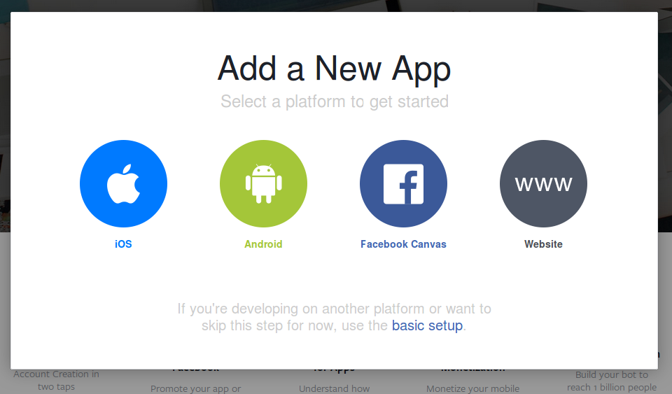
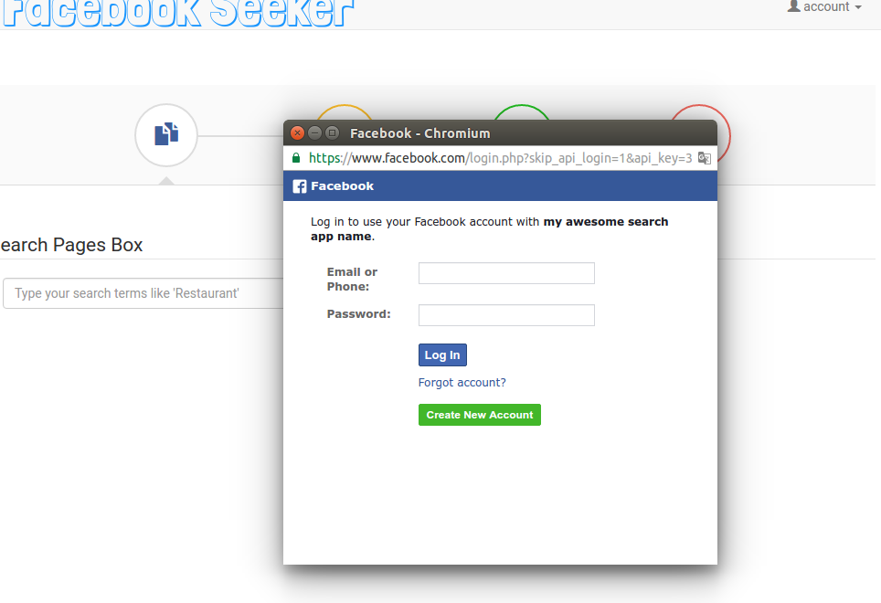

Facebook Seeker
- created: 10/31/2016
- latest update: 11/06/2016
- by: webbati
- email: webbati@gmail.com
Installation
The installation of FacebookSeeker is very simple, just unzip the archive and copy the FacebookSeeker folder in the web server root. Open config.php file inside root folder of FacebookSeeker and set you domain, your APP ID and APP SECRET of your Facebook application.That's all!
Note: Make sure that the folder is writable by the web server
Create Facebook App
Go to http://developers.facebook.com/ click on My App then on 'Add a New App'
on the popup that appear click on the grey 'WWW' button

insert your costum App name then click on 'Create New Facebook App ID'
Insert your contact email and select a category (Ex. 'Business') then click on 'Create App ID' button

Insert Captcha and press submit
Now skip Quick start by click 'Skip Quick Start' on the top right corner
Now you have to copy APP ID and APP SECRET , to display APP SECRET you have to click on te he 'Show' button
insert your facebook password and press 'Submit'
Now you can see and copy your APP ID and APP SECRET
Open config.php file in facebookseeker main directory and insert your data:
Now you have to configure your Facebook App.
Go to Setting -> Basic and insert your domain ( where you have installed FacebookSeeker) and add site platform to authorize your FacebookSeeker installation URL and save changes
Now add Facebook Login by clicking on App product on the side menu then click on 'get Started' button on Facebook Login product
In settings of the Facebook Login product set 'client OAuth Login' and 'Web OAuth Login' to yes then add your domain in 'Valid OAuth Redirect URIs' field and save changes.
First access on FacebookSeeker
Go to your Facebook Seeker installation url (www.yourdomain.com/facebookseeker/) and login; defaults accounts are:
Username = admin
Password = admin
Username = user1
Password = user1
Username = user2
Password = user2
Username = user3
Password = user3
Change it immediately by settings in the account menu on the top
Insert your new username and password then click on 'Save Changes'
At the first access you have to grant access to the your new Facebook App

If facebook popup don't appear check if your browser block it or on search you retraive an error and zero results.
If you deauthorize the app then you want reauthorize it from same user you have to clear saved tokens.
Note: If you don't remember your login password you can reset it to default admin/admin to copy file account.dat in the facebookseeker/login folder of the archive then copy it on the facebookseeker/login directory on your web server.
Search on FacebookSeeker
You can search on pages, groups, events and places. Change search by navigating trought round icon on the top.
You can perform simultanely search on each of them without lose results.
Type your search term in text field, select amount of result you'd like ( facebook limit this to max 500, but the result set is not ever the same ) then click on search button
In the result set you can execute a generic search by search field on the top right result container, otherwise you can perform filter on each columns by fields on the bottom of the table result set.
Some columns are not been displayed in the default view, if you want show (or hide) them select them on the list by clicking on the 'Column Visibility' button.
When the data row is too long additional columns will be displayed inside a detail view of the row that you can show by clicking on the blue plus (+) icon that will appear on the left of the row.
You can dowload results set to work in excel or whatever you like by clicking on 'Excel' or 'CSV' button on the top of the results set table.
You can also save it in pdf format to create a quick report to send or archive ecc.
Whit 'Copy' button you will copy results set on the clipboard.